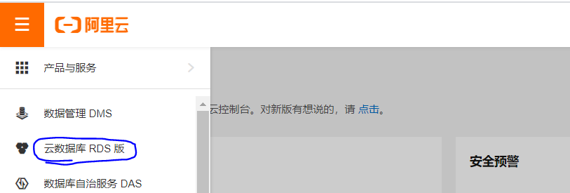
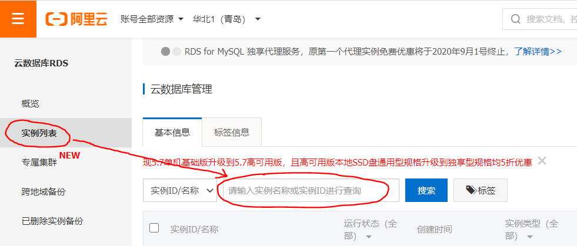
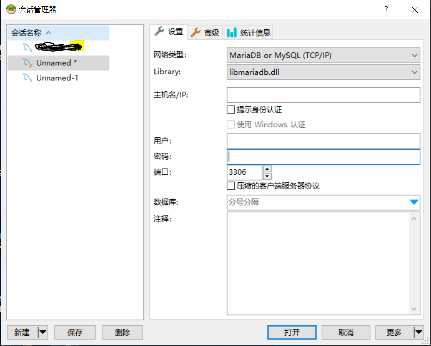
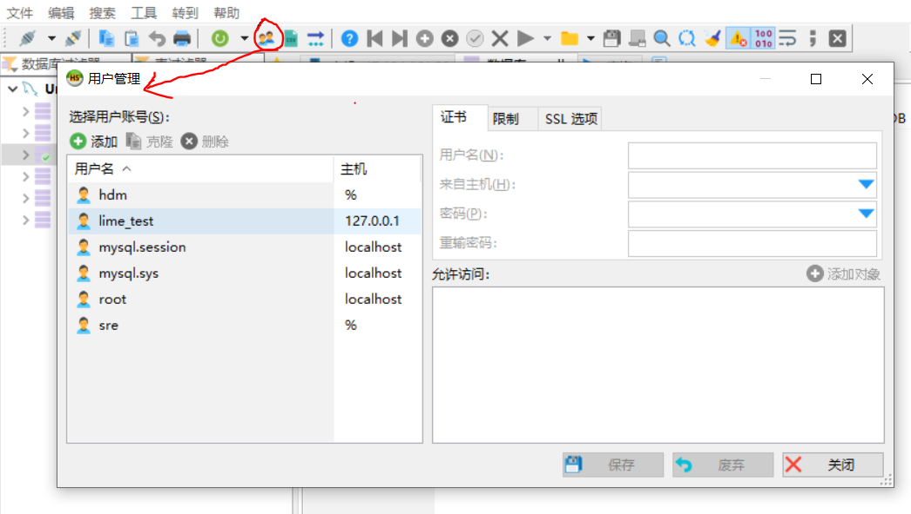
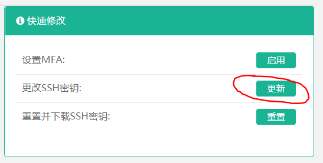
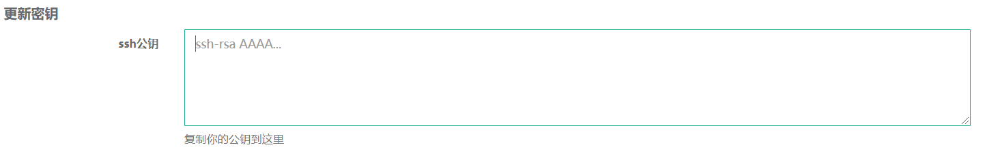
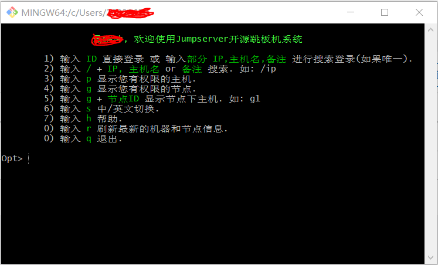

软件安装
- VPN：远程办公使用，领取电脑之前公司会安装好，若无则前往下载；
- iHaier：公司内部交流办公使用，领取电脑之前公司会安装好，若无则前往下载；
- 钉钉：公司内部交流办公使用，前往下载；
- XMind：整理思维导图使用，前往下载；
- Sublime Text3：好用的文本编辑器，前往下载；
- Typora：好用的MarkDown编辑器，前往下载；
- HeidiSQL：用于简单化MySQL服务器和数据库管理的图形化界面，前往下载。
Github Page + Hexo + Next 搭建个人博客
1 | npm config set registry https://registry.npm.taobao.org |
- 博客无法上传图片问题解决：
1 | 首先确保博客文件的编码格式为UTF-8，然后根据如下步骤解决： |
数据库入门
- MySQL简介；
- 服务器上MySQL5.7的安装部署与卸载
- 先搞懂两本书：《MySQL必知必会》、《MySQL王者晋级之路》
- 可以先研究一下MySQL用户权限管理，能够处理一些授权类的工单
数据库管理
云数据库管理：
- 登录，然后侧边栏选择“云数据库 RDS版”

- 侧边栏选择“实例列表”，在搜索框搜索需要操作的实例，点击实例名进入该实例的管理界面

自建数据库管理：
- 打开HeidiSQL，登录

- SQL语句操作或界面操作，例如：用户权限管理

配置堡垒机
- 电脑设置“登陆选项”配置指纹登录；
- 以工号和密码登录Jumpserver；
- 点击个人信息在右侧选择“更改SSH密钥”：

- 打开Git Bash，执行命令“cat ~/.ssh/id_rsa.pub”，将返回的信息拷贝复制到下面的文本框中，然后点击提交即可配置完成。

- 在Git Bash中执行命令“ssh -p 端口号 工号@ip地址”(需要有权限)，显示下面的页面即配置成功
